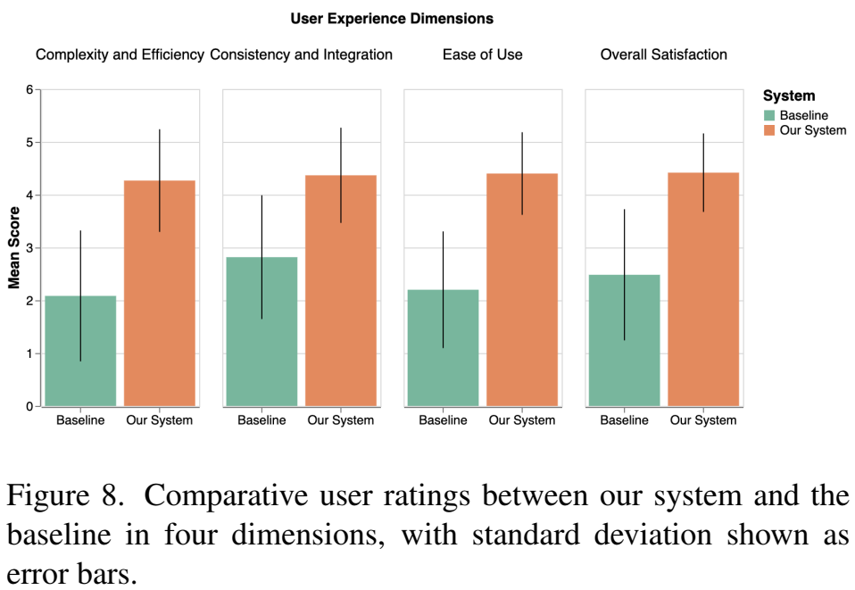

论文阅读二十五：MagicQuill：一个智能交互式图像编辑系统
摘要
作为一种高度实用的应用程序，图像编辑会遇到各种用户需求，因此优先考虑出色的易用性。在本文中，我们推出了MagicQuill，这是一个集成的图像编辑系统，旨在支持用户快速实现他们的创造力。我们的系统从一个流线型但功能强大的界面开始，使用户只需几笔就能表达他们的想法（例如，插入元素、擦除对象、更改颜色等）。然后，这些交互由多模态大型语言模型（MLLM）监控，以实时预测用户意图，从而绕过了提示输入的需要。最后，我们应用了强大的扩散先验，并通过精心学习的双分支插件模块进行了增强，以精确控制的方式处理编辑请求。请访问 https://magicquill.github.io 尝试我们的系统。
引言
对数码照片进行精确和高效的编辑仍然是一个重大挑战，特别是在进行细微修改时。如图1所示，考虑编辑一位女士的肖像，其中需要进行特定的修改：将衬衫转换为定制设计的夹克，在设计良好的形状的精确位置添加花冠，将她的头发部分染成特定的颜色，并去除背景的某些部分以改善她的外观。尽管扩散模型[6,10,14,19,35-38,47,62,68]取得了快速进展，最近也有人试图加强控制[20,23,48,69]，但实现这种细粒度和精确的编辑仍然存在困难，这通常是由于缺乏用于细粒度控制的直观界面和模型。
这些挑战凸显了对促进精确和高效修改的交互式编辑系统的迫切需求。一个理想的解决方案是使用户能够指定他们想要编辑的内容、在哪里应用更改以及修改应该如何出现，所有这些都在一个用户友好的界面中，简化了编辑过程。
我们的目标是开发第一个强大的、开源的、交互式的精确图像编辑系统，使图像编辑变得简单高效。我们的系统无缝集成了三个核心模块：编辑处理器、绘画助手和创意收集器。编辑处理器确保高质量、可控的编辑生成，在颜色和边缘调整中准确反映用户的编辑意图。绘画助手增强了系统预测和解释用户编辑意图的能力。Idea Collector是一个直观的界面，允许用户快速轻松地输入他们的想法，大大提高了编辑效率。
编辑处理器实现了两种基于笔划的引导机制：用于结构修改（例如添加、细化或删除元素）的涂鸦引导和用于修改颜色属性的颜色引导。受ControlNet[66]和BrushNet[23]的启发，我们的控制架构确保精确遵守用户指导，同时保留未修改的区域。我们的绘画助手减少了重复输入文本提示的过程，这会扰乱编辑工作流程，并在提示输入和图像操作之间造成繁琐的过渡。它采用MLLM来解释笔划，并根据图像上下文自动预测提示。我们称这个新颖的任务为绘制和猜测。我们构建了一个模拟真实编辑场景的数据集进行微调，以确保MLLM在理解用户意图方面的有效性。这实现了连续的编辑工作流程，允许用户迭代编辑图像，而无需手动提示输入。Idea Collector提供了一个与Gradio和ComfyUI等各种平台兼容的直观界面，允许用户使用不同的画笔绘制、操纵笔划，并轻松进行连续编辑。
我们对我们的交互式编辑框架进行了全面评估。通过定性和定量分析，我们证明与现有方法相比，我们的系统显著提高了执行详细图像编辑的精度和效率。与SmartEdit[20]和BrushNet[23]等基线相比，我们的编辑处理器实现了卓越的边缘对齐和色彩保真度。与最先进的MLLM（包括LLaVA-1.5[31]、LLaVA-Next[30]和GPT-4o[21]）相比，绘画助手表现出卓越的用户意图解释能力。用户研究表明，Idea Collector在系统可用性的各个方面都明显优于基线界面。
通过利用先进的生成模型和以用户为中心的设计，我们的交互式编辑框架大大减少了执行详细图像编辑所需的时间和专业知识。通过解决当前的图像编辑工具局限性并提供创新的解决方案，提高精度和效率，我们的工作推进了数字图像处理领域的发展。我们的框架为用户提供了创造性地参与图像编辑的可能性，轻松有效地实现了他们的目标。
相关工作
图像编辑
图像编辑涉及修改现有图像的视觉外观、结构或元素[19]。扩散模型[17,44,49]的最新突破显著推进了视觉生成任务，在图像编辑能力方面优于基于GAN的模型[15]。为了在图像编辑中实现控制和指导，出现了各种方法，利用不同的方式，如文本指令[6,11,14,32,47,65]、掩码[20,23,48,69]、布局[10,33,68]、分割图[35,62]和点拖动界面[36-38]。尽管取得了这些进步，但当需要在区域层面进行精确修改时，这些方法往往不足，例如改变物体形状、颜色和其他细节。在各种方法中，基于草图的编辑方法[22,25,34,42,59,61,64]为用户提供了一种更直观、更精确的交互方式。然而，当前的方法仍然受到草图旁边输入的文本信号准确性的限制，这使得精确控制编辑区域的信息（如颜色）变得具有挑战性。为了实现精确控制，我们引入了两种基于笔触的局部引导：涂鸦和颜色，从而能够在区域级别对形状和颜色进行精细控制。
用于图像编辑的MLLM
多模态大型语言模型（MLLM）扩展了LLM以处理文本和图像内容[16]，实现了文本到图像的生成[9,28,52,53,58]、提示[60,63]和图像质量评估[51]。
在图像编辑领域，MLLM已经显示出巨大的潜力。MGIE[13]通过使用MLLM生成更具表现力、更详细的指令，增强了基于指令的图像编辑。SmartEdit[20]利用MLLM更好地理解和推理复杂的指令。FlexEdit[55]集成MLLM以理解图像内容、掩码和文本指令。GenArtist[57]使用MLLM代理来分解复杂的任务，指导工具选择，并通过逐步验证实现系统的图像生成、编辑和自校正。我们的系统通过引入更直观的方法来扩展这一研究领域，利用MLLM简化编辑过程。具体来说，它直接将图像上下文与用户输入笔划集成来推断和翻译编辑意图，从而自动生成必要的提示，而不需要重复的用户输入。我们称之为Draw&Guess的这项创新任务促进了连续的编辑工作流程，使用户能够以最少的手动干预迭代地优化图像。
交互式支持图像生成
交互式支持通过人类在环协作提高了生成模型的性能和可用性[27]。最近的工作重点是通过图像聚类[4,12]和注意力可视化[56]等技术使快速工程更加用户友好。
尽管交互式支持取得了进展，但弥合口头提示和视觉输出之间的差距仍然是一个关键挑战。虽然像PromptCharm[56]和DesignPrompt[39]这样的系统使用修复进行交互式图像编辑，但这些工具通常只提供对元素添加和删除的粗粒度控制，要求用户在这些区域内生成对象之前刷过区域。此外，用户必须手动输入提示，以指定他们希望生成的对象。我们的方法通过使用笔触引入细粒度图像编辑来解决这些局限性。此外，我们采用了一种多模态大型语言模型（MLLM），通过实时解释用户意图和建议提示来提供即时帮助，从而减少认知负荷并提高整体可用性。
系统设计
我们的系统围绕三个关键方面构建：具有强大生成先验的编辑处理器、具有即时意图预测的绘画助手和具有用户友好界面的创意收集器。我们的系统设计概述如图2所示。
我们的系统引入了基于笔触的控制信号，以提供直观和精确的控制。这些信号允许用户通过简单地绘制他们所设想的内容来表达他们的编辑意图。我们设计了两种类型的画笔，涂鸦和彩色，以准确地操纵编辑后的图像。涂鸦刷，加刷和减刷，旨在通过对原始图像的边缘图进行操作来提供精确的结构控制。彩色画笔使用降采样的色块，对特定区域进行精细的颜色操作。图3显示了将用户手绘输入信号转换为控制条件以忠实地修复目标编辑区域的工作流程。受Ju等人[23]、Zhang等人[66]的启发，我们在潜在扩散框架[44]中采用了两个额外的分支，其中修复分支为编辑区域的重新生成提供了每像素的内容感知指导，控制分支提供了结构指导。模型架构如图4所示。更多细节将在第3.1节中讨论。
为了减少用户在编辑的每个阶段输入适当提示的认知负荷，我们的系统集成了MLLM[29]作为绘画助手。此组件基于图像上下文分析用户笔划以推断编辑意图，从而自动建议上下文相关的编辑提示。我们将这项创新任务命名为Draw&Guess。为了有效地为Draw&Guess准备MLLM，我们设计了一种数据集构建方法来模拟用户手绘的编辑场景，并为Draw&Guess获取真实数据。我们对专用的LLaVA[31]模型进行了微调，实现了即时快速猜测，准确率令人满意。更多细节将在第3.2节中介绍。
此外，为了向用户提供一个简化、直观的界面，使他们能够轻松表达对复杂图像编辑任务的想法，我们设计了一个具有用户友好界面的创意收集器。界面的主要特征将在第3.3节中概述。
编辑处理器
刷涂信号控制条件。让 和 分别表示与加法和减法画笔对应的二进制掩码。这些掩码与原始图像I具有相同的尺寸，其中在与用户画笔笔划对应的区域中，值设置为1，在其他地方设置为0。减法画笔从边缘图E中遮蔽边缘，边缘图E最初是使用预训练的CNN 从原始图像中提取的。相反，添加画笔通过在边缘图中将指定区域设置为白色来引入新的边缘。由此产生的修改后的边缘图 用作在编辑处理器中操纵几何结构的控制条件。这可以正式表示为
对于精确的特定于区域的着色，我们将每个颜色画笔笔划表示为元组 ，其中 表示指示用户定义的笔划区域的二进制掩码，c指定笔划颜色， 表示笔划不透明度。着色操作可以正式表示为
其中，具有alpha混合因子 的颜色c被应用于由二值掩模 定义的图像I的特定区域。
为了生成颜色条件 ，我们首先使用三次插值将图像 缩小16倍，然后使用最近邻插值将其放大到原始分辨率。该过程生成了一个保留全局颜色结构的色块，同时简化了局部细节。
边缘条件 和颜色条件 共同指导修复过程，以实现精确的编辑控制。由掩码M表示的编辑区域是通过将画笔区域的联合扩展p个像素而获得。然后，可以将掩码图像 公式化为
这种扩展解释了编辑可能会影响蒙版周围的区域（例如阴影或其他相邻细节）这一事实。通过扩大蒙版，我们确保正确生成这些外围区域，从而实现更加无缝和逼真的编辑。
可控图像修复。修复分支采用UNet[23,45]架构，将掩码图像特征合并到预训练的扩散网络中。该分支在第t步输入级联的噪声潜在特征 ，使用VAE[26]从 中提取掩码图像潜在特征 ，并通过三次插值从M中下采样掩码m。修复分支利用扩散模型的可训练克隆来处理这些特征，去除交叉注意力层，仅关注图像特征。所提取的携带像素级信息的特征通过零卷积层 [66]插入到冻结扩散模型的每一层中。给定文本条件 ，时间步长t，设 表示扩散UNet的总共n层中第i层的特征，参数为 。同样，设 表示修复UNet中第i层的输出，其中 表示级联操作。此特征插入可以表示为
其中， 是决定恢复强度的可调节超参数。配备了修复分支，扩散UNet可以根据文本提示以内容感知的方式填充掩码区域。
控制分支旨在基于条件 将条件生成能力引入扩散UNet。我们采用ControlNet将条件控制插入到扩散UNet的中间和解码器模块。设 表示ControlNet中第i层的输出，控制特征插入可以公式化为：
其中， 是决定恢复强度的可调节超参数。修复和控制分支都不会改变预训练扩散模型的权重，使其成为适用于任何社区微调扩散模型的即插即用组件。控制分支使用去噪分数匹配目标进行训练，该目标可以写为
其中， 是去噪U-Net和ControlNet模型的组合。
绘画助手
在我们的系统中，我们实现了两种类型的问答（Q&A）[3]任务，以方便Draw&Guess。对于添加画笔，我们使用了一个结构如下的提示：
This is a 'draw and guess' game.
I will upload an image containing some strokes. To help
you locate the strokes, I will give you the normalized
bounding box coordinates of the stokes where their original
coordinates are divided by the padded image width and
height. The top-left corner of the bounding box is at
(x1, y1), and the bottom-right corner is at (x2, y2). Now
tell me in a single word a phrase, what am I trying to draw
with these strokes in the image?
Q&A输出直接作为预测提示。对于减去画笔，我们绕过Q&A过程，结果表明，无提示生成取得了令人满意的结果。
对于彩色画笔，Q&A设置类似：
The user will upload an image containing some contours in red
color. To help you locate the contour, … You need to identify
what is inside the contours using a single word or phrase.
（重复部分省略）。该系统从彩色画笔笔划边界提取轮廓信息。最终的预测提示是通过将笔划的颜色信息与Q&A输出相结合而生成的。为了优化响应时间，我们将Q&A响应限制为简洁的单字或短句格式。
对于彩色画笔Q&A任务，轮廓内的准确物体识别至关重要。LLaVA[31]天生擅长对象识别任务，使其擅长识别彩色画笔笔划边界内的内容。然而，由于人类手绘笔划或草图的固有抽象性，对添加笔划的解释构成了重大挑战。为了解决这个问题，我们发现有必要构建一个专门的数据集来微调LLaVA，以更好地理解和解释人类手绘的笔触。
数据集构建 。我们选择了密集字幕图像（DCI）数据集[54]作为我们的主要来源。DCI数据集中的每个图像都有详细的多粒度掩码，并附有开放的词汇标签和丰富的描述。这种丰富的注释结构能够捕获各种视觉特征和语义上下文。
步骤1：Q&A答案生成。初始阶段包括使用PiDiNet[50]从DCI数据集中的图像生成边缘图，如图5b所示。我们计算掩码区域内的边缘密度，并选择边缘密度最高的前5个掩码，如图5c所示。与这些选定掩码对应的标签是Q&A的基本事实。为了确保模型侧重于猜测用户意图，而不是解析无关的细节，我们清理标签，只保留名词成分，简化以强调基本元素。
步骤2：使用边缘叠加模拟画笔笔划。在数据集构建的第二部分，我们重点关注第一步中确定的五个掩码。每个掩码都会进行随机形状扩展，以引入可变性。我们使用基于SDXL[41]的BrushNet[23]模型，在空提示下对这些增强掩码进行修复，如图5d所示。随后，如图5e所示，将之前生成的边缘图叠加到修复区域上。这些叠加图像模拟了用户手绘笔划如何改变图像的实际示例。
MLLM微调。我们的数据集构建方法有效地为模型做好了准备，以理解和预测用户编辑，其中包含总共24315张图像，分为4412个不同的标签，确保了用于训练的广泛数据。为了优化MLLM相对于Draw&Guess的性能，我们对LLaVA进行了微调，利用低秩自适应（LoRA）技术[18]，允许在没有大量数据集的情况下进行高效微调。与最初的LLaVA训练目标一致，我们的方法旨在最大化给定输入语料库 正确标签的似然，定义为
其中， 和 分别是预训练MLLM和LoRA中的参数。
创意收集器
界面设计。MagicQuill的用户界面旨在提供直观且流畅的图像编辑体验，如图2所示。该界面分为几个交互式部分，强调易用性，同时提供对编辑过程的灵活控制。该界面包括几个关键区域：显示MLLM建议提示的提示区域（a）、带有基本编辑工具的工具栏（B）、用于组织画笔笔划的层管理（C）、用于编辑的主画布（D）、用于预览结果的生成图像区域（E）、执行按钮（F）和参数调整（G）。
跨平台支持。我们将创意收集器实现为模块化的ReactJS组件库，旨在与各种生成AI框架（如Gradio[1]和ComfyUI[7]）实现跨平台兼容性。该架构通过HTTP协议将客户端用户交互与服务器端模型计算分离，通过标准HTML渲染实现独立于平台的部署。
实验
在评估我们的系统时，我们重点关注了三个主要模块：编辑处理器、绘画助手和创意收集器。首先，我们评估了编辑处理器提供的可控生成的质量，特别关注边缘对齐和颜色保真度。该评估涉及分析用户如何有效地操纵和实现所需的视觉输出，以确保系统准确响应用户的控制信号，详见第4.1节。其次，我们使用模拟手绘输入评估了绘画助手的语义预测准确性。这一评估对于验证MLLM在解释用户意图方面的能力至关重要，确保了与图像语义一致的上下文适当的建议。此外，我们进行了用户研究，以收集关于系统在现实世界场景中的效率改进和预测准确性的反馈，如第4.2节所述。第三，我们评估了所有模块的用户界面的可用性。我们将评估分解为四个不同的维度，从运营效率到用户满意度。如第4.3节所示，这种多维评估框架能够与基线系统进行系统比较，同时确保对接口进行彻底评估。
可控生成
为了全面评估我们的编辑处理器的可控生成能力，我们将其与来自不同类别的四个代表性基线进行了比较：（1）SmartEdit[20]，一种基于指令的编辑方法。我们利用LLaVA-Next[30]生成编辑指令；（2） SketchEdit[64]，一种基于GAN的草图条件化方法；（3） BrushNet[23]，掩码和提示引导修复方法；以及（4）BrushNet[23]和ControNet[66]复合基线组合。如图6所示，基于指令的方法SmartEdit倾向于产生过于随机的输出，缺乏准确编辑所需的精度。同样，虽然BrushNet支持特定区域的修改，但即使在ControlNet增强的情况下，它也难以保持可预测的细节生成，这使得精确操作变得具有挑战性。相比之下，我们的模型实现了更精确的边缘对齐和颜色保真度，这归功于我们对修复和控制分支的专门设计，强调了这些方面。
我们在第3.2节中进一步对构建的测试数据集进行了定量分析，该数据集包含490张图像。如表1所示，我们的模型在所有关键指标上都优于基线。这些结果表明，可控生成有了显著改善。
预测精度
为了评估绘画助手的预测准确性，我们将其与三种最先进的MLLM进行了比较：LLaVA-1.5[31]、LLaVA-Next[30]和GPT-4o[21]，这些MLLM来自第3.2节的490幅图像的测试数据集。每个模型都会收到包含草图和边界框坐标的图像提示，以生成语义解释。语义输出使用三个指标进行评估：BERT[8]、CLIP[43]和GPT-4[2]相似性得分，用于衡量生成的描述与基本事实的接近程度。对于GPT-4相似性，我们要求GPT-4在5分制上对预测反应和基本事实之间的语义和视觉相似性进行评分，其中1表示“完全不同”，3表示“有点相关”，5表示“完全相同”。评估结果如表2所示，表明我们的模型在所有测试的MLLM中达到了最高的预测精度。这种卓越的性能表明，我们的绘画助手能够更准确地捕捉和预测用户绘画的语义含义。
为了进一步定性评估绘画助手，我们对30名使用我们的系统自由编辑图像的参与者进行了用户研究。参与者对绘画助手的预测准确性（1：非常差，5：优秀）和效率促进（1：显著降低，5：显著提高）进行了5分制评分。如图7所示，86.67%的用户认为预测准确率至少为4，验证了我们微调的MLLM解释用户意图的能力。同样，90%的人认为效率促进4或以上，这证实了Draw&Guess通过减少手动提示输入有效地简化了编辑过程。准确性和效率的平均得分分别为4.07和4.37。
创意收集的有效性和效率
有效和高效地收集用户想法对于交互式系统的可用性和采用至关重要，特别是在用户参与至关重要的创意应用中。为了评估创意收集器，我们对30名参与者进行了一项用户研究，将我们的系统与基线系统在以下方面进行了比较：
- 复杂性和效率衡量用户如何简化和直观地找到创意编辑系统。
- 一致性和集成评估系统是否保持了连贯的界面和交互设计。
- 易用性体现了系统的可学习性，特别是对于具有不同背景的用户。
- 总体满意度反映了用户对系统的设计、功能和可用性的总体满意度。
基线。基线系统被实现为定制的ComfyUI工作流，用开源画布Painter Node[40]取代了我们的创意收集器界面。此设置通过控制其他变量，使我们能够专注于创意收集器提供的值。
过程。这项研究对每个参与者进行了大约30分钟的研究，使用了两个系统（我们的系统和基线）。每阶段都以使用图1所示案例对系统进行简要介绍开始。然后，参与者有5分钟的时间自由探索和编辑图像。使用这两个系统后，参与者完成了一份包含22个问题的问卷（每个系统10个问题，涵盖所有四个维度，2个问题涉及第4.2节中详述的绘画助手）。我们采用系统可用性量表（SUS）[5]进行评分，使用李克特量表从1（强烈不同意）到5（强烈同意），以捕捉每个系统主观可用性的全局视图。
如图8所示，与基线相比，我们的系统在所有维度上的得分都明显更高。表明我们的创意收集器的有效性。更多细节见补充资料。

结论
总之，我们的交互式图像编辑系统MagicQuill通过结合编辑处理器、绘画助手和创意收集器的优势，有效地解决了执行精确高效编辑的挑战。我们的综合评估表明，在可控生成质量、编辑意图预测准确性和用户界面效率方面，现有方法有了显著改进。对于未来的工作，我们的目标是通过引入其他编辑类型来扩展我们系统的功能，例如基于参考的编辑，这将允许用户使用外部图像指导修改。我们还计划实现分层图像生成，以提供更好的编辑灵活性和对复杂构图的支持。此外，增强排版支持将使图像中的文本元素能够更稳健地操作。这些发展将进一步丰富我们的框架，为用户提供一个更通用、更强大的数字图像编辑创意表达工具。
实现细节
编辑处理器
我们的编辑处理器基于Stable Diffusion v1.5[44]构建，与所有定制的微调权重兼容。我们将控制参数设置为修复强度 和控制强度 ，同时在可控修复期间将掩模区域扩展了15个像素。生成过程采用带有Karras调度器的Euler祖先采样器[24]，每一代需要20个步骤。在标准硬件上，生成512×512分辨率的图像大约需要2秒，消耗15 GB VRAM。对于控制分支，我们对LAION美学数据集进行微调[46]，具体选择美学得分高于6.5的图像。训练过程跨越3个时期，学习率为5e-6，批量大小为8。
绘画助手
我们在第3.2节中利用LoRA[18]，在我们自己构建的数据集上对具有7B个参数的LLaVA-1.5模型进行了微调，用于绘制和猜测任务。LoRA等级和alpha分别为64和16。该模型训练了3个迭代周期，学习率为2e-5，批量大小为8。在4位量化下，该模型仅使用5 GB VRAM即可在0.3秒内实现实时提示推理，从而能够以令人满意的精度高效地生成即时提示。
创意收集器
跨平台支持。除了Gradio，MagicQuill还可以作为自定义节点集成到ComfyUI中，如图9所示。它设计有用于参数设置的可定制小部件和用于未来平台集成的可扩展架构。
使用场景。为了演示MagicQuill的用户友好工作流程，我们提出了一个说明性场景：用户想要修改一个完整蛋糕的图像，如图2所示，从中切下一片。用户首先通过工具栏上传图像，工具栏提供对一系列工具的访问（图2-B）。使用添加画笔，用户可以在画布上直接勾勒出要切割的切片（图2-D）。同时，第3.2节中介绍的Draw&Guess功能预测用户打算操纵“蛋糕”，并在提示区域自动建议相关提示（图2-a）。之后，用户切换到减法刷来填充轮廓切片，直观地标记要从蛋糕上移除的区域。为了获得更高的精度，可以使用橡皮擦工具来细化切割。调整完成后，用户通过单击运行按钮（图2-F）生成图像，该按钮运行第3.1节中详述的模型。
生成的图像出现在生成的图像区域中（图2-E）。用户可以通过勾选图标确认更改以更新画布，或单击十字图标还原修改。此工作流程允许迭代改进编辑，在整个过程中提供灵活的控制。